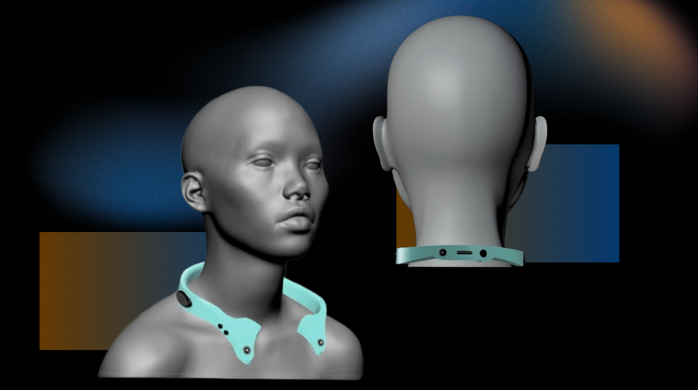
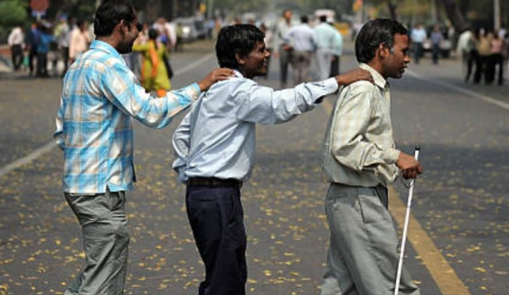
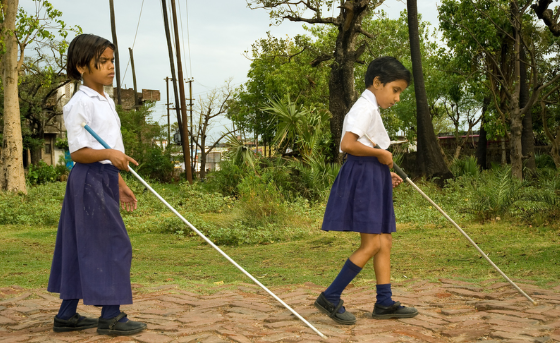
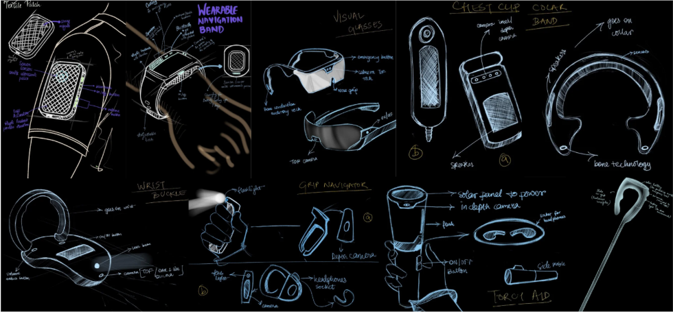
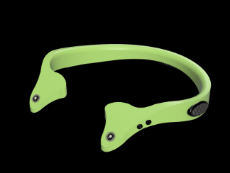
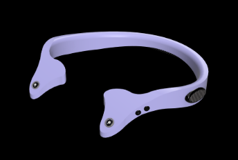
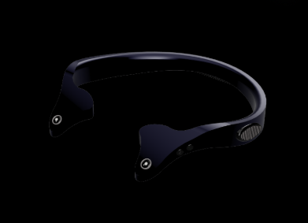
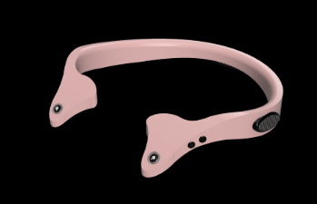

"A wearable navigation system designed to enhance spatial awareness and independent mobility for visually impaired users through non-visual feedback and assistive sensing technologies."
Visually impaired individuals struggle with navigation especially in new or unfamiliar spaces. Existing aids offer poor real-time feedback and fail to provide true independence. Research identified critical gaps that current solutions fail to address.

HARIS profiling & user observation — understanding existing navigation challenges

Field research — navigating unfamiliar environments
Multiple form factors were explored — from textile patches and wrist buckles to visual glasses and collar bands. Each was evaluated for wearability, social acceptance, technical feasibility, and effectiveness.

Ideation — exploring multiple form factors and interaction strategies
The finalized concept is a lightweight, ergonomic wearable collar that keeps ears open through bone conduction technology. The collar form was chosen for its unobtrusive presence, 360° sensor coverage, and social acceptance.
Internal bone conduction technology transmits audio through the skull, keeping ears completely open to ambient sound — critical for safety.
Depth-sensing front cameras + echo detection create full spatial awareness without requiring constant head movement.
Medical-grade silicone and TPU ensure skin-safe comfort and durability. Snap-fit and magnetic components simplify assembly and cleaning.
MEMS microphones, Bluetooth, and GPS integrated on a custom PCB for compact, efficient processing of all sensor data.
System transitions from 3D-printed prototypes to injection molding and CNC-machined precision parts for scalable manufacturing.
Single-button emergency response system sends location and alert to preset contacts immediately — enhancing safety and peace of mind.

Mint

Lavender

Noir

Blush
The final design is a lightweight, ergonomic wearable navigation device that enhances spatial awareness while keeping the user's ears open through bone conduction technology. Integrated depth-sensing and echo detection enable omnidirectional obstacle awareness, supported by a customized PCB with MEMS microphones, Bluetooth, and GPS for navigation and emergency response. Medical-grade silicone and TPU ensure comfort and durability, while snap-fit and magnetic components simplify assembly. Designed for scalable production, the system transitions from 3D-printed prototypes to injection molding and CNC-machined precision parts.